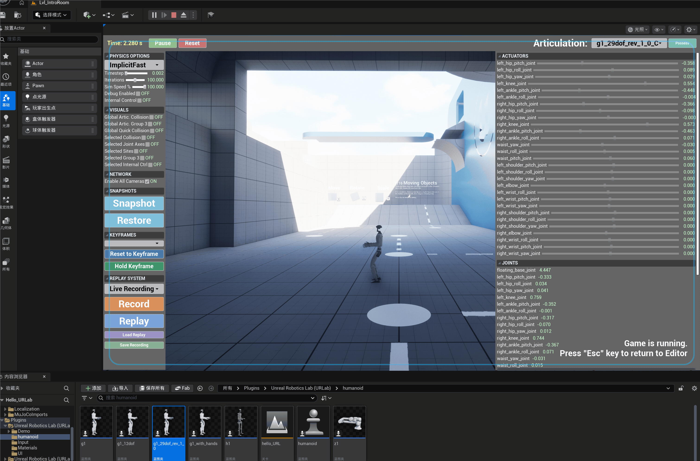
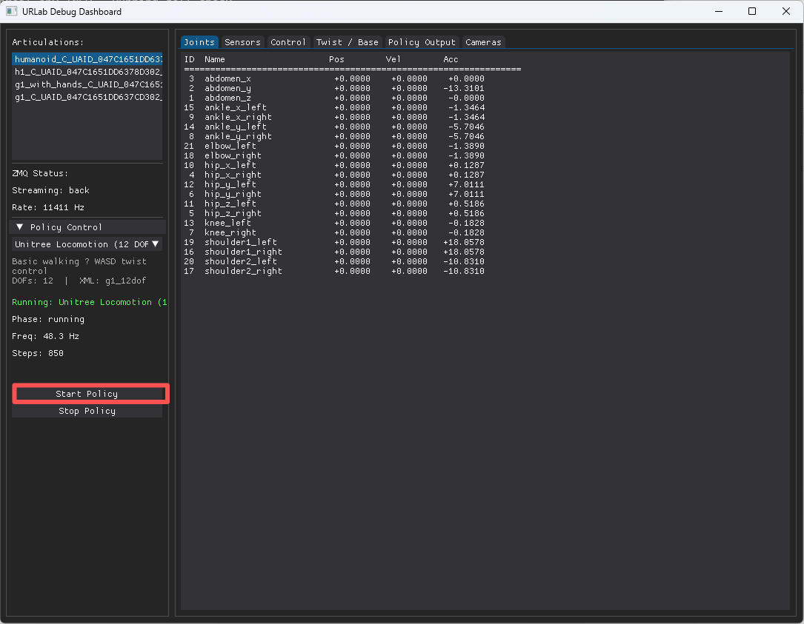

入门
先决条件
- 虚幻引擎 5.7+： C++插件代码和第三方库应该可以在早期的 UE5 版本上编译，但内置的
.uasset文件（UI组件、材质、输入映射）是在5.7版本中序列化的，因此不向下兼容。核心模拟功能在旧版本上仍然可以运行，但仪表盘UI和一些编辑器功能将会缺失。如果确实需要支持旧版本，我们可以考虑提供兼容的资源。 - Windows 10/11：Linux 还在实验阶段。
- MuJoCo 3.7+：集成在
third_party/目录中（从源代码构建）。 - C++ 工程: 此插件包含源代码，无法在仅使用蓝图的项目中使用。
- Visual Studio 2022 (带有 "Game development with C++" 工作负载)。
- Python 3.11+ (可选，用于外部策略控制)
- uv：可选，用于 Python 依赖管理
安装
⚠️ 重要提示： 这是一个 C++ 插件。您必须使用 C++ 项目。如果您的项目仅包含蓝图，请在开始之前通过Tools > New C++ Class添加一个空的 C++ 类。
- 将插件仓库克隆到你的虚幻引擎项目
Plugins/目录中：cd "YourProject/Plugins" git clone https://github.com/URLab-Sim/UnrealRoboticsLab.git - 构建第三方依赖项（一次）。在启动引擎之前，您必须先获取并安装 MuJoCo 所需的依赖项。请打开 PowerShell，然后运行以下命令：
Windows 的预编译二进制文件包含在
cd UnrealRoboticsLab/third_party .\build_all.ps1third_party/install/（MuJoCo、libzmq、CoACD）中。 (如果您在此处遇到编译器栈溢出错误，请参阅下面的 故障排除 部分。 -
（不需要）注册该模块： 打开您的主机项目（新建
游戏中的Intro To Unreal项目，新建空项目会编译报错）的.Build.cs文件（例如，Source/YourProject/YourProject.Build.cs），并将"UnrealRoboticsLab"添加到您的PublicDependencyModuleNames中：PublicDependencyModuleNames.AddRange(new string[] { "Core", "CoreUObject", "Engine", "InputCore", "UnrealRoboticsLab" }); -
（不需要，双击.uproject文件即可提示编译）编译： 右键点击您的
.uproject文件，选择Generate Visual Studio project files，然后打开解决方案并在您的集成开发环境中构建您的项目。 -
显示资产： 在虚幻内容浏览器中，点击 设置(Settings)（齿轮图标）并勾选 显示插件内容(Show Plugin Content)。此操作是查看用户界面组件和插件资源所必需的。
-
(可选) C++ 集成： 如果您想在自己的 C++ 代码中直接使用 URLab 类型（例如，
#include "MuJoCo/Core/AMjManager.h", 强制转换为AMjArticulation*），请将"URLab"添加到项目的.Build.cs文件中：如果您仅通过编辑器、蓝图或 ZMQ 使用插件，则无需执行此操作。PublicDependencyModuleNames.AddRange(new string[] { "Core", "CoreUObject", "Engine", "InputCore", "URLab" }); -
（可选）Python 桥接： 配套的 urlab_bridge 软件包提供用于外部控制、强化学习策略部署和 ROS 2 桥接的 Python 中间件。请参阅其 urlab_bridge 文档 以获取设置说明。
# 已移到 urlab_bridge 仓库 cd UnrealRoboticsLab/urlab_bridge pip install uv uv sync -
有关编辑和构建铰链的说明，请参阅 铰链构建器指南 。
导入你的第一个机器人
来自 MJCF XML
- 获取机器人 XML（例如，来自 MuJoCo Menagerie ）。
- 将 XML 文件（比如：人形机器人RoboJuDo/assets/robots/g1
/g1_29dof_rev_1_0.xml ，肌肉骨骼人解析不完全）拖入虚幻引擎内容浏览器。首次导入时，编辑器会提示安装所需的 Python 包（
trimesh、numpy、scipy）——这些包默认已安装在虚幻引擎自带的 Python 环境中，因此无需额外设置。您也可以根据需要选择其他 Python 解释器。 - 蓝图会自动生成，其中包含所有关节、实体、执行器和传感器等组件。
- 双击打开导入的蓝图类
g1_29dof_rev_1_0，点击+添加按钮将一个组件MjPDController添加到此参与者。
（可选）快速转换（静态网格）
- 在关卡中放置静态网格体对象（家具、道具等）。
- 给每个参与者添加一个
MjQuickConvertComponent。 - 设置为 动态(Dynamic) 表示物理碰撞，设置为 静态(Static) 表示固定碰撞。
- 启用
ComplexMeshRequired非凸形状（使用 CoACD 分解）。
场景设置
- 在你的关卡中放置一个
MjManager参与者（必须每个关卡一个）。 - 将导入的机器人蓝图放置在关卡中。
- 点击场景的播放（Play）。
- MjSimulate 小部件将显示（如果管理器中
bAutoCreateSimulateWidget已启用）。 - 启动图形用户界面：
python src/run.py --ui，铰链（Articulations）中选择导入蓝图g1_29dof_rev_1_0_*，策略控制（Policy Control）选择AMO Locomotion (29 DOF) [PHC]，点击开始策略(Start Policy)； - 在弹出的交互界面中点击
Play（物理模拟自动开始）。

如果点击交互界面的Play后，机器人掉落到地面以下，则导入RoboJuDo\assets\robots\g1\g1_12dof.xml可以解决。
控制机器人
从仪表盘
- 使用 MjSimulate 小部件中的执行器滑块来移动关节。
- 将控制源设置为 UI（在管理器上或每关节），以使用仪表板滑块而不是 ZMQ。
来自 Python (ZMQ)
cd进入urlab_bridge/.- 安装：
uv sync(或者pip install -e .)。或者pip install zmq numpy dearpygui # 安装 RoboJuDo cd RoboJuDo pip install torch --index-url https://download.pytorch.org/whl/cpu pip install -e . cd .. - 运行策略：
python src/run.py --policy unitree_12dof - 或者使用图形用户界面：
python src/run.py --ui - 选择您的铰链（Articulation）和策略（Policy），点击开始（Start Policy）。

从蓝图
// 设置执行器控制值
MyArticulation->SetActuatorControl("left_hip", 0.5f);
// 读取关节状态
float Angle = MyArticulation->GetJointAngle("left_knee");
// 读取传感器数据
float Touch = MyArticulation->GetSensorScalar("foot_contact");
TArray<float> Force = MyArticulation->GetSensorReading("wrist_force");
所有的功能都是可调用的蓝图BlueprintCallable.
调式可视化
有关完整的 PIE 叠加层（接触力、碰撞线框、关节轴、约束岛、实例/语义分割和肌肉/肌腱管）以及驱动它们的快捷键，请参阅 调试可视化指南。
请参阅 快捷键 了解键盘快捷键。
后续步骤
- 特性 -- 完整功能参考
- MJCF 导入 -- 导入管道详情
- 蓝图参考 -- 所有蓝图可调用函数和快捷键
- ZMQ 网络 -- 协议、主题和 Python 示例
- 策略桥接 -- 强化学习策略部署
- 开发者工具 -- 模式跟踪、 XML 调试、构建/测试技能
故障排除
构建错误：MSVC 栈溢出（错误代码：0xC00000FD）
如果 build_all.ps1 脚本因错误代码 -1073741571 而失败，这表明您的编译器在处理 MuJoCo 复杂的传感器模板时已耗尽了内部内存。
- 解决方法： 将 Visual Studio 更新至最新版本（VS 2022 (17.10+) 或以上版本）或 VS 2025（这是 MuJoCo CI 的参考版本）。
- 应变方法： 通过运行以下命令强制设置更大的栈大小：
cmake -B build ... -DCMAKE_CXX_FLAGS="/F10000000" - 相关Issues：github的Issue ，报错信息：
error MSB6006: “CL.exe”已退出，代码为 -1073741571。 [D:\work\donghaiwang\UnrealRoboticsLab\third_party\MuJoCo\src\build\plugin\sensor\sensor.vcxproj]
UnrealRoboticsLab\third_party\install\MuJoCo目录下
UI：“模拟”仪表盘未显示
UI 与上下文相关，需要满足特定条件：
- 确保关卡中存在
MjManager参与者。 - 在
MjManager设置中，确认bAutoCreateSimulateWidget已启用。 - 确保您已按照安装指南中的 "显示资产(Show Assets)" 步骤操作，以使引擎能够访问 UI 小部件。
旧版UE：内容资源无法加载
捆绑的 .uasset 文件（UI 组件、材质、输入映射）是用 UE 5.7 保存的，无法在早期版本中加载。C++ 插件代码可以编译，核心仿真也能运行，但仪表盘 UI 和一些编辑器功能会缺失。
我们强烈建议您升级到 UE 5.7，因为这是我们唯一测试和支持的版本。如果无法升级，并且您同时安装了 UE 5.7 和旧版本，您可以通过复制粘贴的方式重新创建资源：
- 在 UE 5.7 中打开插件项目，并打开您需要的控件/材质/输入资产。
- 在编辑器图表中选择所有节点（Ctrl+A），然后复制（Ctrl+C）。
- 在旧版本的 UE 中，创建一个相同类型的新资源（例如，一个父级为
MjSimulateWidget的控件蓝图）。 - 粘贴（Ctrl+V）——节点和层级结构将跨版本迁移。
- 保存新资源。现在它与您的引擎版本兼容了。
此方法适用于 UMG 控件蓝图、材质图表和输入映射资产。
仿真：机器人处于静态状态
- 控制源：检查
MjManager或MjArticulation的控制源是否设置为 UI。如果设置为 ZMQ，则 UI 滑块将被忽略。 - 物理状态： 确保
MjManager未暂停，并且机器人组件设置中未将其设置为静态(Static)。